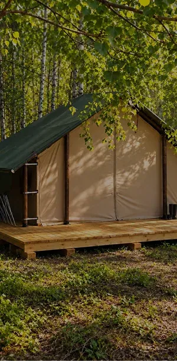
Глэмпинг VIP
65 000 ₽ за 2 недели
- Просторный глэмпинг с кроватью
- Питание три раза в день
- Душ и туалет
- Трансфер из Барнаула
- Раскопки по желанию, лекции, разведка
- Археологический инвентарь
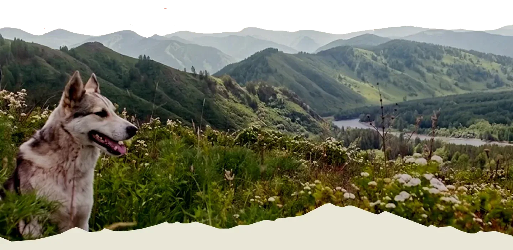
В вечной гонке современного мира мы редко находим время, чтобы замедлиться и взглянуть по‑новому на окружающий мир. Но представьте: вы делаете шаг в сторону от привычной суеты - и перед вами открывается иная реальность.
Тишина полей, шелест ветра, запах земли, прикосновение древности под пальцами. Есть места, где время течёт иначе, где можно: перезагрузиться вдали от города; ощутить связь с историей через собственные руки; найти единомышленников и настоящую команду.
Гости будт лишь наблюдать за процессом»
Вы - не просто гость, а участник экспедиции. Предстоит полностью погрузиться в аутентичную атмосферу древности: можно пожить как древние народы Алтая в землянке или юрте, поучаствовать в археологических раскопках, подержать в руках древние артефакты и многое другое.
«Нужно копать весь день»
В день раскопки занимают 4 часа. А сами работы проводятся медленно и не требуют больших физических нагрузок.
«Питание только гречкой и тушенкой»
В экспедиции разнообразное питание 3 раза в день. Еда готовится на костре в казане.
«Я не справлюсь, мне нужны знания и опыт в археологии.»
Опыт не нужен. Инструмент выдадим, объясним и покажем на месте.
«В свободное время будет нечем заняться»
Лекции по истории, купание на озере, походы по горам Алтая, рукоделие, костёр, гитара, и разговоры с теми, кто приехал за тем же.
Подъём на завтрак. Короткий инструктаж: что копаем сегодня и кто чем занят. Подготовка к раскопккам.
Выход на раскопки, а так же расчистку находок и археологическую разведка.
Возвращение в лагерь и долгожданный горячий обед.
Свободное время в которое можно: искупаться в озере, сходить в поход, заняться творчеством и многое другое.
Ужин. После которого можно будет собраться у костра под гитару.
Отбой.
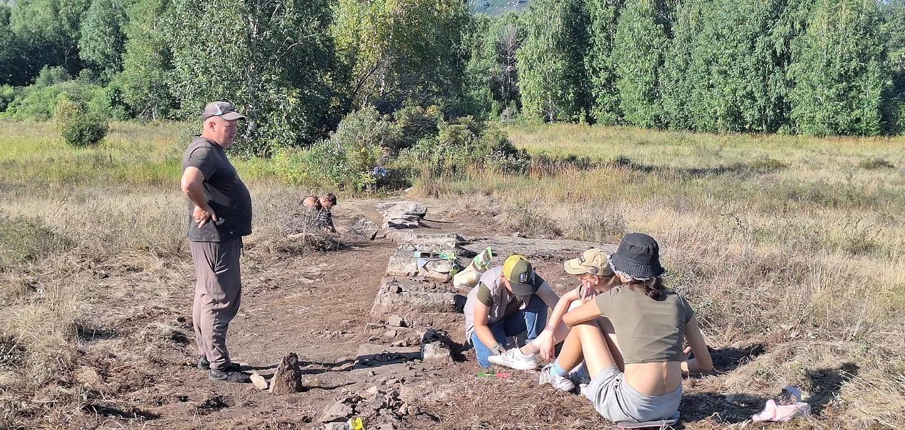
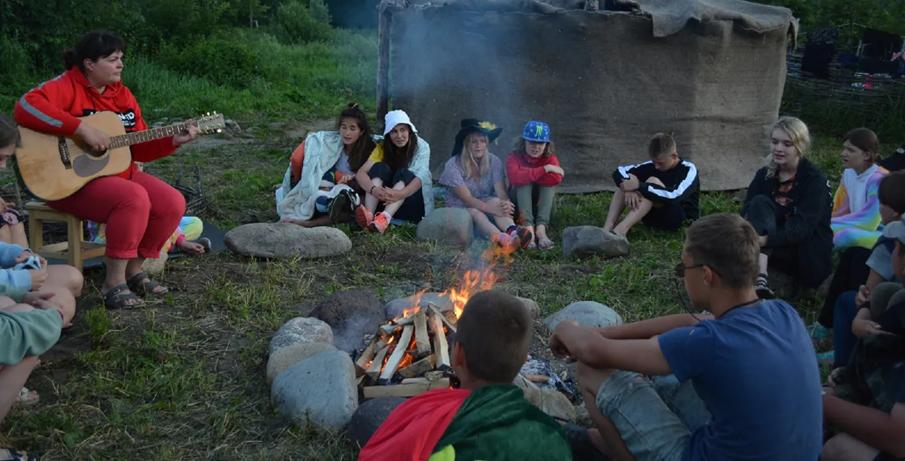
У нас предусмотрено несколько тарифов, для того чтобы участник мог выбрать для себя самый комфортный формат.

65 000 ₽ за 2 недели
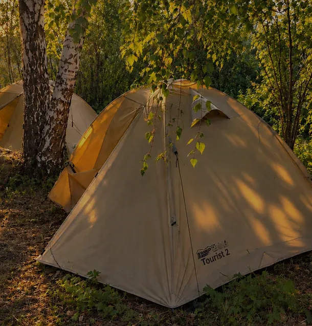
Самый популярный выбор
30 000 ₽ за 2 недели
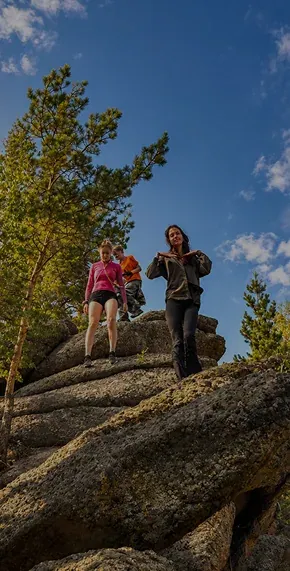
15 000 ₽ за 2 недели
Две недели слишком много? У нас есть вариант экспедиции всего на неделю. Палатка, спальник, одеяло, коврик, душ и туалет, трансфер из Барнаула, вся программа и инвентарь.
15 000 ₽ за неделю
Несколько дней, чтобы попробовать себя в роли археолога. Палатка, спальник, питание три раза в день, душ и туалет, раскоп и лекции. Без трансфера.
2 500 ₽ за сутки
Горячее из казана на костре три раза в день. Плюс напитки, свежие ягоды и сладкое.
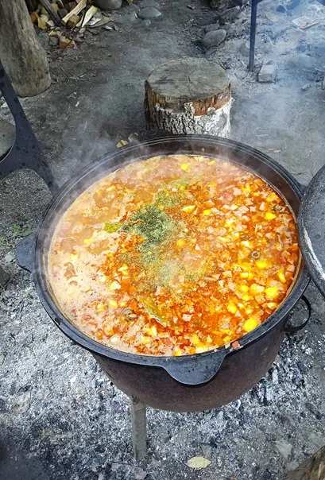
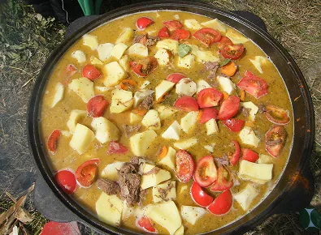
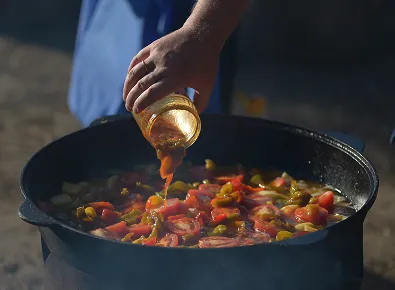
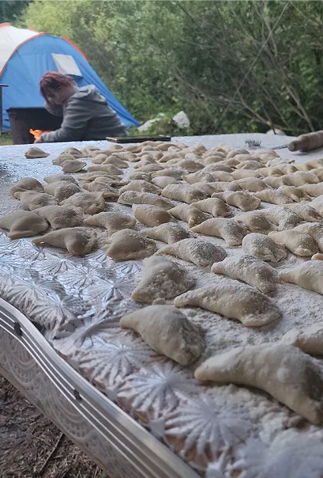
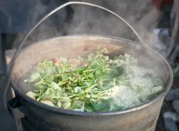
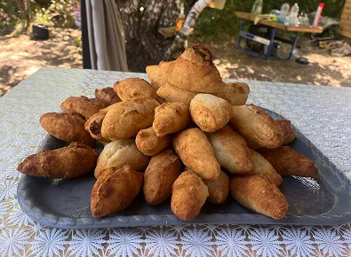
Большое разнообразие работы и отдыха в экспедиции
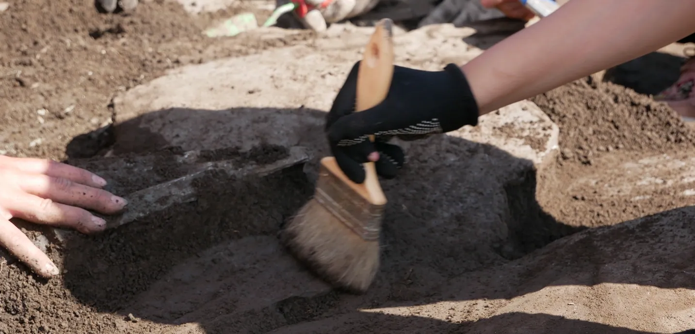
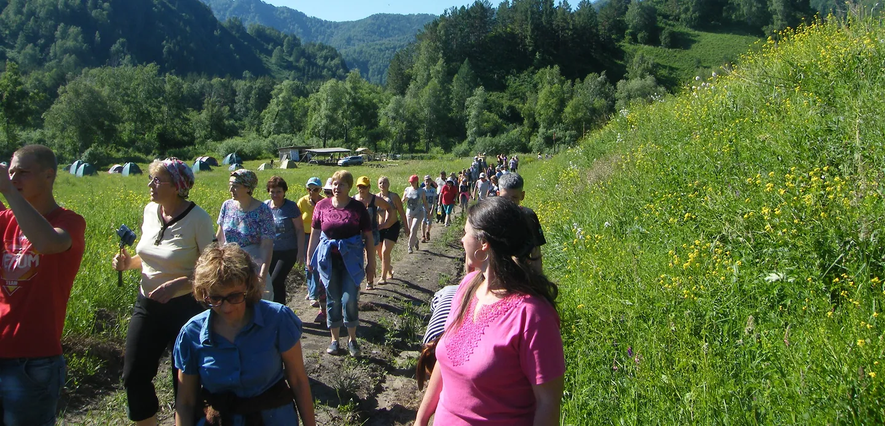
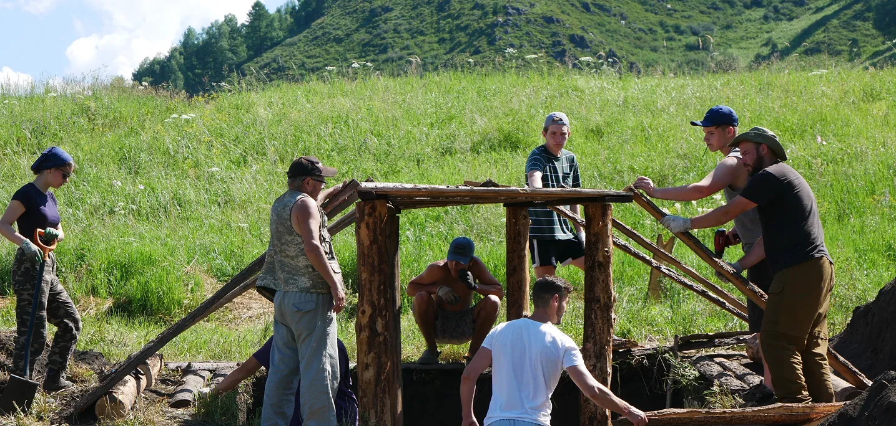
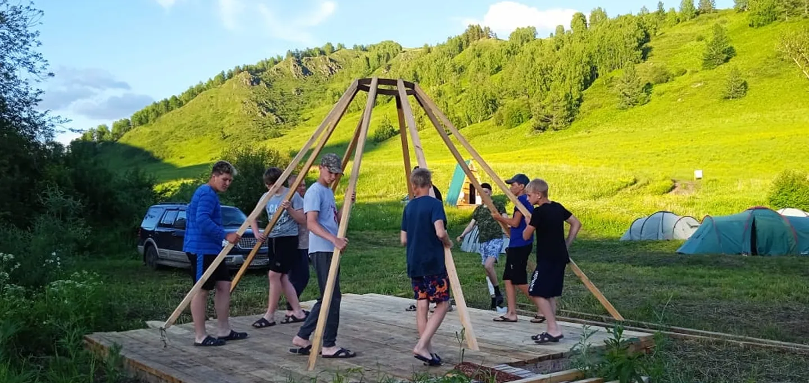
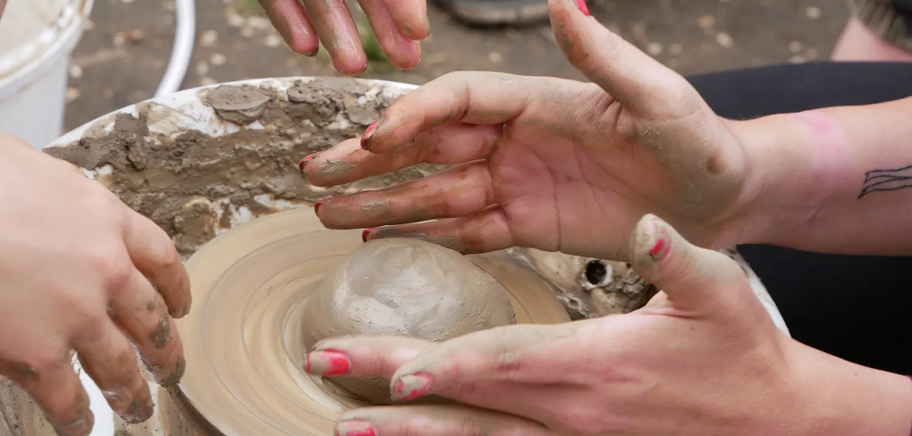
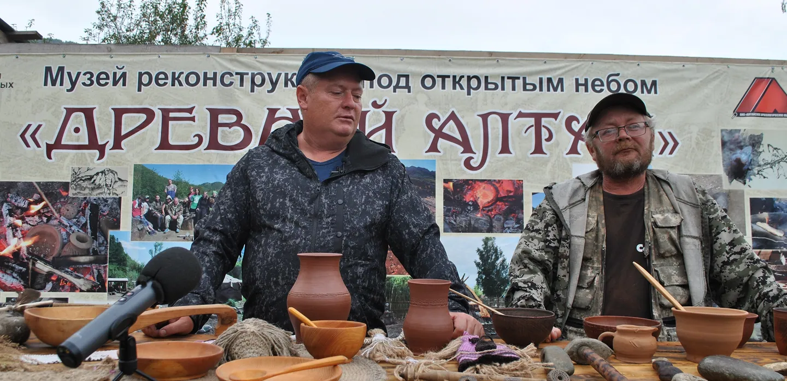
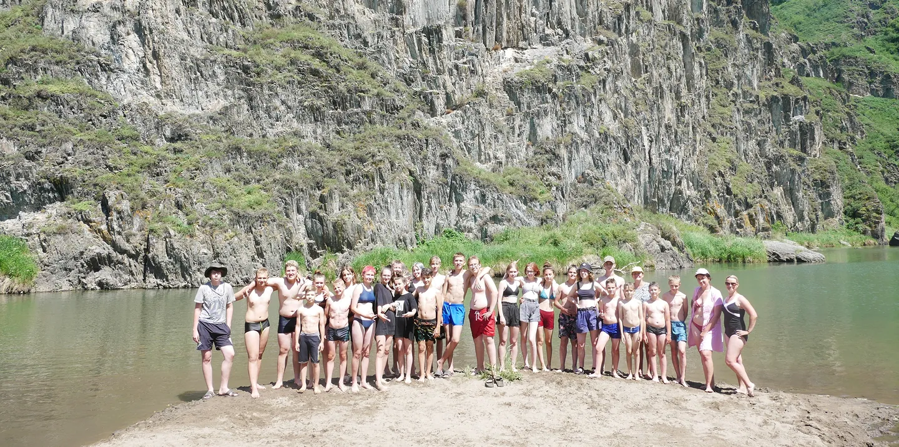
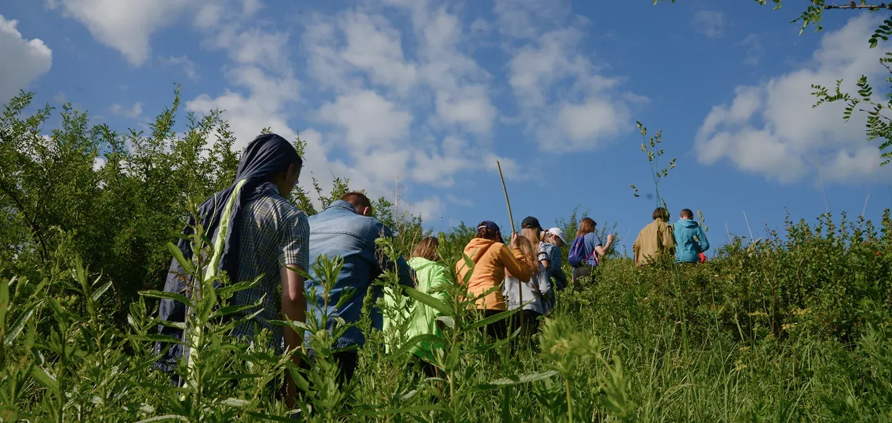
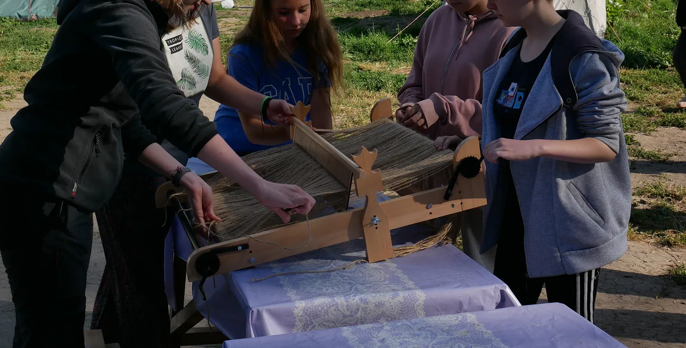
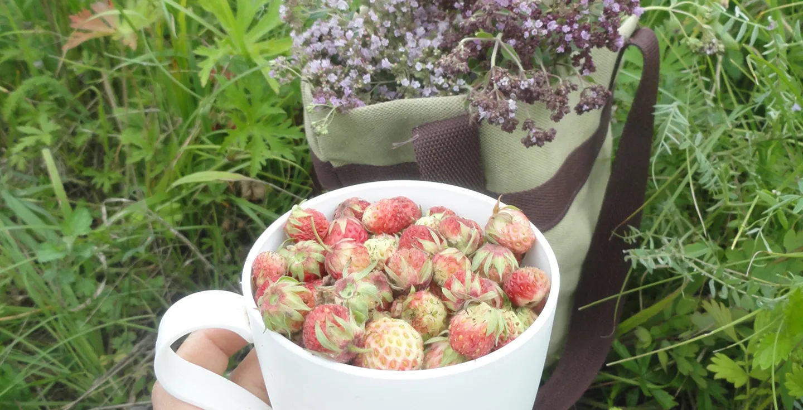
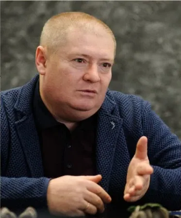
Руководитель экспедиции
Основатель «Алтайского археологического общества», профессиональный археолог, держатель открытого листа Минкультуры РФ, специалист по древнетюркской эпохе. 23 года педагогического и исследовательского стажа.
Организовал более 100 научно-просветительских экспедиций и 28 конференций и форумов. С 2001 года возглавляет волонтёрский отряд, объединивший свыше 4000 добровольцев, входит в совет по развитию волонтёрства при Губернаторе Алтайского края. Проекты отмечены грантами Президента РФ и Президентского фонда культурных инициатив, государственными грамотами и благодарностями.
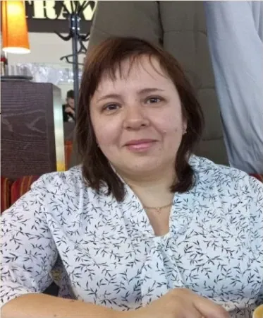
Заместитель руководителя
Учредитель Алтайского археологического общества, профессиональный археолог, педагог и методист высшей категории со стажем 18 лет. Отвечает за связь с участниками, администрирование и работу с волонтёрами.
Соавтор и соруководитель более 40 научных экспедиций, организатор свыше 60 конференций, выставок и просветительских мероприятий. Руководит школьным краеведческим музеем, участвует в региональных и федеральных грантовых проектах. Автор более 30 научных публикаций по музееведению, краеведению и патриотическому воспитанию молодёжи.
Оставьте заявку. Руководитель свяжется с вами, ответит на вопросы и пришлёт список вещей.
Удобнее написать самим? Telegram, VK или звонок +7 (905) 989-31-43.
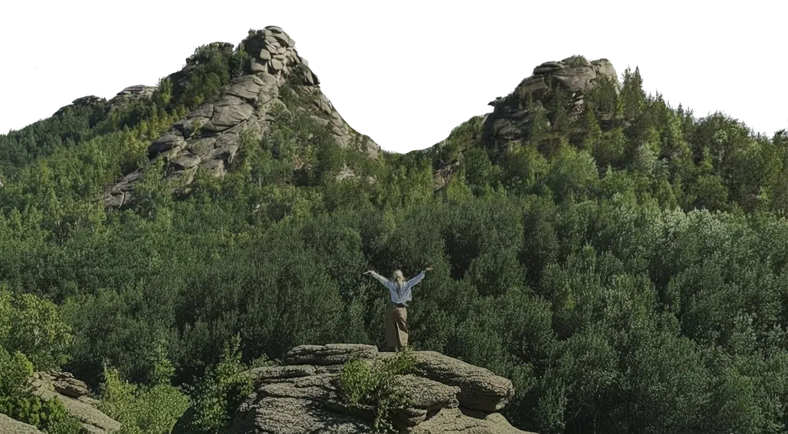
Да. Опыт не нужен: на месте вам покажут, как держать инструмент и что делать, а рядом всегда работают археологи. Нагрузка на раскопе не больше 4 часов в день.
Душ и туалет есть, они деревянные, строится баня. Стирать удобно в озере, для сушки в лагере есть верёвки и прищепки. Телефоны заряжаем от генератора, интернет и связь в лагере ловят.
На утро обычно молочные каши всех видов, на обед супы: от солянки до борща. А на ужин меню самое разнообразнаее, может быть что угодно. Мы стараемся не повторяться в еде!
Трансфер из Барнаула в даты начала заездов от Красноармейского проспекта, 131. Можно приехать и в другой день: доберитесь до села Саввушка, предварительно созвонившись, оттуда вас заберёт руководитель.
1 заезд: 14–28 июня
2 заезд: 28 июня – 12 июля
3 заезд: 12–26 июля
4 заезд: 26 июля – 9 августа
5 заезд: 9–23 августа
В экспедицию может поехать любой человек. Возраст от 12 лет - в качестве волонтёра с родителями.
В непогоду раскопки переносятся: можно слушать лекции, заниматься рукоделием или керамикой. Детали уточните у руководителя при бронировании.
После заявки руководитель пришлёт файл с полным списком вещей.